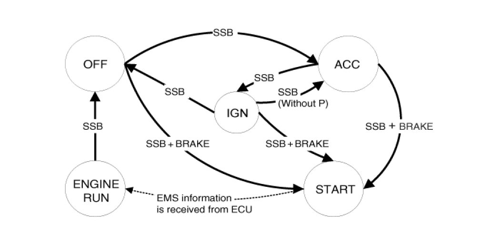
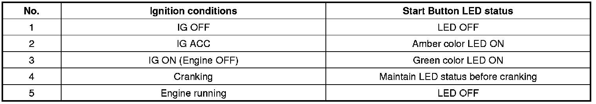
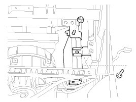
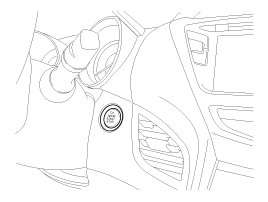
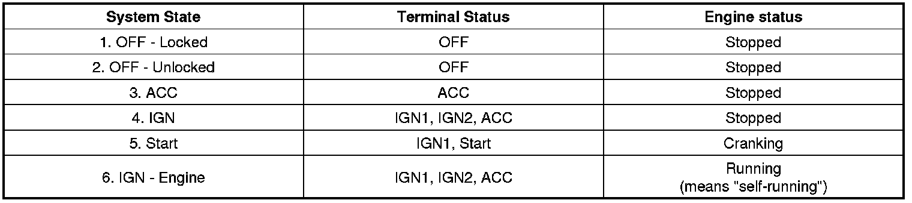
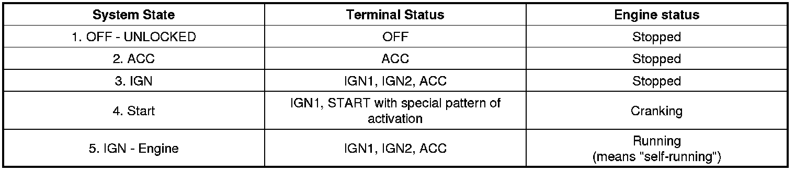

Button Engine Start System
Description
System Overview
The System offers the following features:
- Human machine interface through a 1-stage button, for terminal switching and engine start.
- Control of external relays for ACC / IGN1 / IGN2 terminal switching and STARTER, without use of mechanical ignition switch.
- Indication of vehicle status through LED or explicit messages on display.
- Immobilizer function by LF transponder communication between fob and fob holder.
- Redundant architecture for high system dependability.
- Interface with Low Speed CAN vehicle communication network.
- Interface with LIN vehicle communication network depending on platform.
The RKE and SMART KEY functions are not considered part of this Button Engine Start system and are specified in separated system.
System Main Function
- Switching of ACC / IGN1 / IGN2 terminals.
- Control of the STARTER relay BAT line (high side) based on communication with EMS ECU.
- Management of the Immobilizer function.
- Management of BES warning function.
Button Engine Start System
The Button Start System allows the driver to operate the vehicle by simply pressing a button (called as SSB) instead of using a standard mechanical key.
If the driver press the SSB while prerequisites on brakes, fob authentication and transmission status are satisfied, the BES System will proceed with the locking/unlocking of the steering column, the control of the terminal, and the cranking of the engine.
The driver can release the SSB as soon as this sequence initiated. After positive response from immobilizer interrogation, the system will activate the starter motor and communicate with the EMS to check the engine running status for starter release.
The driver will be able to stop the engine by a short push on the SSB if the vehicle is already in standstill. Emergency engine stop will be possible by a long press of the SSB or 3 consecutive presses in case the vehicle is in ENGINE RUNNING.
If the conditions for engine cranking are not satisfied while a push on the SSB is detected and a valid fob authenticated, the system will unlock the steering column and switch the terminals to IGN. Another push on the SSB will be necessary to start the engine.
In case of a vehicle equipped with SMART KEY system, fob authentication will not require any action from the driver. For limp home start or in case of vehicle without SMART KEY, the driver will have to insert the fob into the fob holder.

- Control Ignition and engine ON/OFF by Sending signal to IPM.
- Display status by LED Lamp ON/OFF. (Amber or Green)
Indicator ON/OFF Condition At Ignition Key Off Condition
Indicator ON/OFF Condition According To Ignition Key's Position

Smart Key Unit

The SMK manages all function related to:
- "Start Stop Button (SSB) monitoring",
- "Immobilizer communication" (with Engine Management System unit for immobilizer release),
- "Authentication server" (Validity of Transponder and in case of Smart Key option Passive Fob authentication ),
- "System consistency monitoring",
- "System diagnosis",
- Control of display message / warning buzzer.
The unit behaves as Master role in the whole system.
In case of SMART KEY application, for example "Passive Access", "Passive Locking" and "Passive Authorization are integrated for Terminal switching Operations".
It collects information about vehicle status from other modules (vehicle speed, alarm status, driver door open.), reads the inputs (e.g. SSB, Capacitive Sensor / Lock Button, PARK position Switch), controls the outputs (e.g. exterior and interior antennas), and communicates with others devices via the CAN network as well as a single line interfaces.
The diagnosis and learning of the components of the BES System are also handled by the SMK.
The SMK manages the functions related to the "terminal control" by activating external relays for ACC, IGN1 and IGN2. This unit is also responsible for the control of the STARTER relay.
The SMK is also controlling the illumination of the SSB as well as the "system status indicator", which consists of 2 LEDs of different color. The illumination of the fob holder is also managed by the SMK.
The SMK reads the inputs (Engine fob in, vehicle speed, relays contact status), controls the outputs (Engine relay output drivers), and communicates with others devices via the CAN.
The internal architecture of the SMK is defined in a way that the control of the terminal is secured even in case of failure of one of the two microcontrollers, system inconsistency or interruption of communication on the CAN network.
In case, failure of one of the two controllers, the remaining controller shall disable the starter relay. The IGN1 and IGN2 terminals relays shall be maintained in the state memorized before the failure and the driver shall be able to switch those IGN terminals off by pressing the SSB with EMERGENCY_STOP pressing sequence. However, engine restart will not be allowed. The state of the ACC relay will depend on the type of failure.
The main functions of the SMK are:
- Control of Terminal relays
- Monitoring of the Vehicle speed received from sensor or ABS/ESP ECU.
- Control of SSB LEDs (illumination, clamp state).
- Control of the base station located in SSB through direct serial interface.
- System consistency monitoring to diagnose SMK failure and to switch to relevant limp home mode.
- Providing vehicle speed information
- Start Stop Button (SSB) monitoring
- Starter power control
Start/Stop Button (SSB)
A single stage push button is used for the driver to operate the vehicle. Pressing this button allows:
- To activate the power modes 'Off', 'Accessory', 'Ignition' and 'Start' by switching the corresponding terminals
- To start the engine
- To stop the engine
The contact will be insured by a micro-switch and a backlighting is provided to highlight the marking of the button whenever necessary.
Two (2) LED colors are located in the center of the button to display of the status of the system. Another illumination LED is also integrated into the SSB for the lighting of the "Engine Start/Stop" characters.

BES(Button Engine Start) System State Chart
System STATES in LEARNT MODE
In learnt mode, the BES System can be set in 6 different sates, depending on the status of the terminals and Engine status:

Referring to the terminals, the system states described in the table above are same as those one found in a system based on a mechanical ignition switch.
The one of distinction with Mechanical-Ignition-Switch based system is that the BES system allows specific transition from [OFF] to [START] without going through [ACC] and [IGN] states.
System STATES IN VIRGIN MODE
The BES System can be set in 5 different states (OFF LOCKED is not available in virgin mode), depending on the status of the terminals and Engine status :

Referring to the terminals, the system states described in the table above are same as those one found in a system based on a mechanical ignition switch.
The one of distinction with Mechanical-Ignition-Switch based system is that the BES system allows specific transition from [OFF] to [START] without going through [ACC] and [IGN] states.